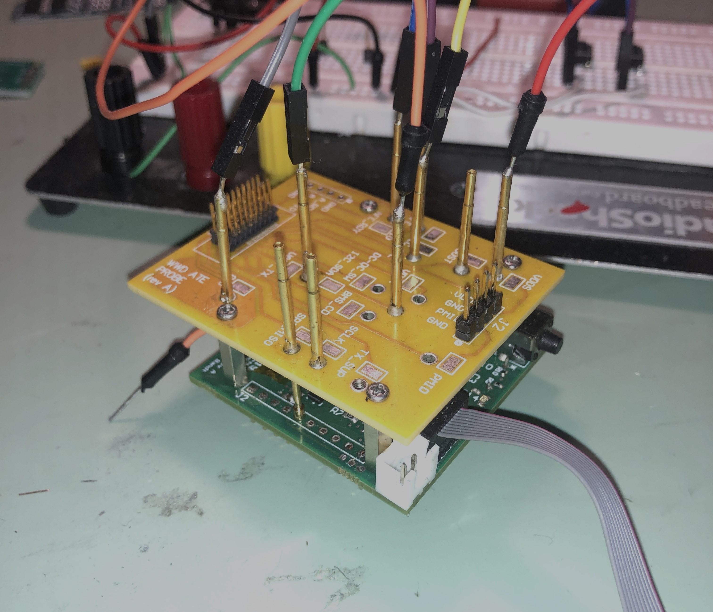
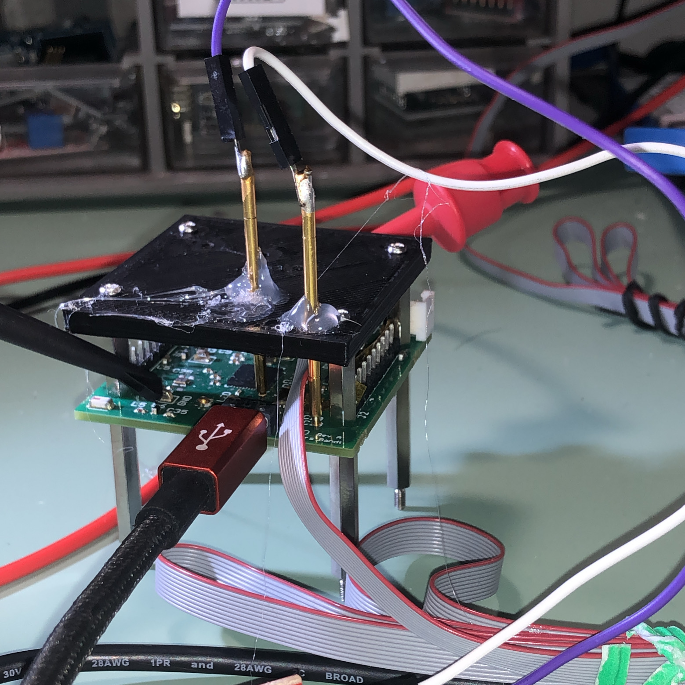
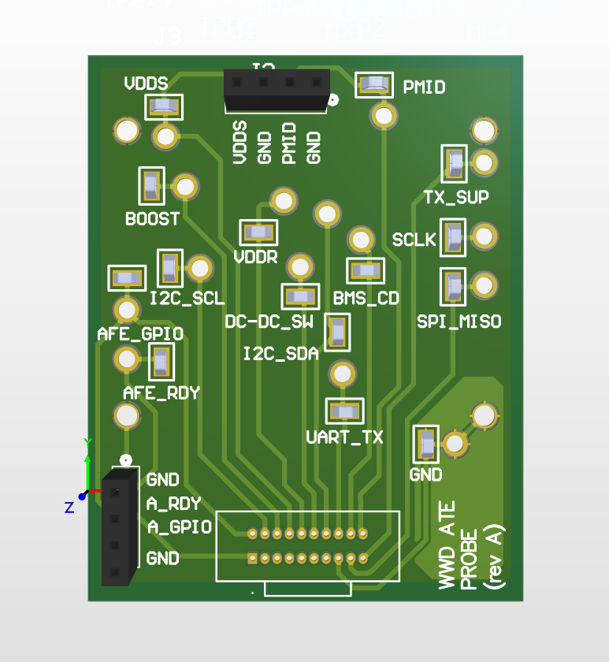
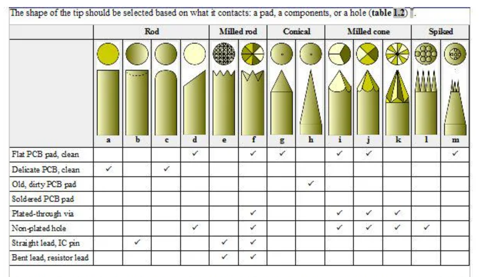

Introduction
Background
This is a project I've designed to be more closely integrated with my software controlled test setup in the future
Really this project is not "probe testing". The term for PCB devices is often "bed of nails testing" or "ICT testing"
Main goal is really just to add these pins or "probes" that drive down into pad test points on a PCB board. The Test PCB will then have some other connectors on it to connect to your test equipment or host PC
The main motivations for making this are
- My experience with probe testing on semiconductor devices and an appreciation for it
- My most recent personal embedded project with very small board size and not much room for large test points

When debugging my design I often have multiple boards going. Maybe one has a certain IC soldered one or I am trying different capacitor values on. This board enables me to quickly swap between designs and have all pins mapped the same way to whatever test equipment I have connected.
Requirements
Scope of work
This project is fairly simple, really it's more of a mechanical design problem than a complicated electrical schematic problem. The eventual PCB created has no actual electrical components, and is really in a sense a complicated connector.
Resources
Essentially all you will need to start this project is
- ECAD software (and skills)
- I used Altium, my preferred but KiCAD is a great, free open-source alternative
- A PCB that you want to test
- it's really best if this PCB has mounting holes for a nice mechanical connection as well
- The coordinates of all your various test points on your PCB
Design
Initial Prototype
For proof of concept I 3D printed an early prototype that just had access to UART TX and RX lines.

This is version 1 of the 3D print. I had alignment issues that I tried to solve with hot-glue, but that proved not to be an elegant solution. Hot glue often has a habit of seeming like a solution, but it is almost always replaced by something else!
Version 2 of the 3D print prototype just added lots of upwards thickness. Pretty simple solution.
==take and add photo of version 2==
Design Approach
Off-board connector I knew that one function of this is board is that it would connect to another test board that would provide larger connectors such as banana jacks and more 2.54mm header pins on it. Thus, we would need a connector.
For connector type I really have grown to like typical IDC connectors. The cables for some length / pin combinations can be expensive, but the quality of these are already really good.
On-board test points I also wanted the probe PCB itself to have some test points. These can be useful for either testing my cable connection, or just simple 2.54mm header wires or probes for certain signal access.

Probes One thing to consider is the shape of the probe tip you select. Depending on your pad shape and type, this should be selected.
You can even have multiple probe tip types per design. For example, in my board all the through-hole "pads" I have that are actually for a 2.54mm header, are a different type than my standard circular pad.

Implementation / Building
Process
Challenges
One challenge I had with my implementation on usage of pins depending on what components were populated on the DUT. For example, if I populated any of these side header pins on my main DUT it made probing very difficult if the corresponding probers were installed on the probe PCB.